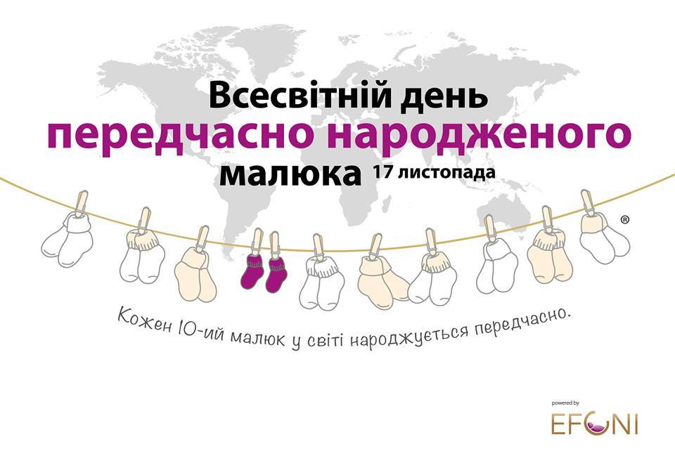
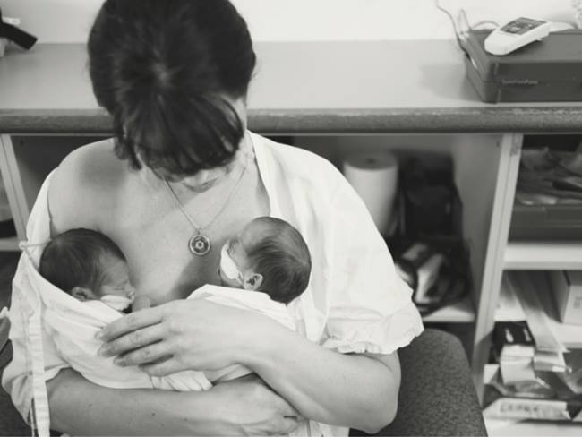
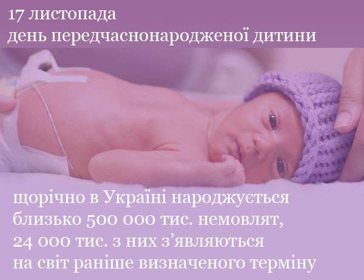
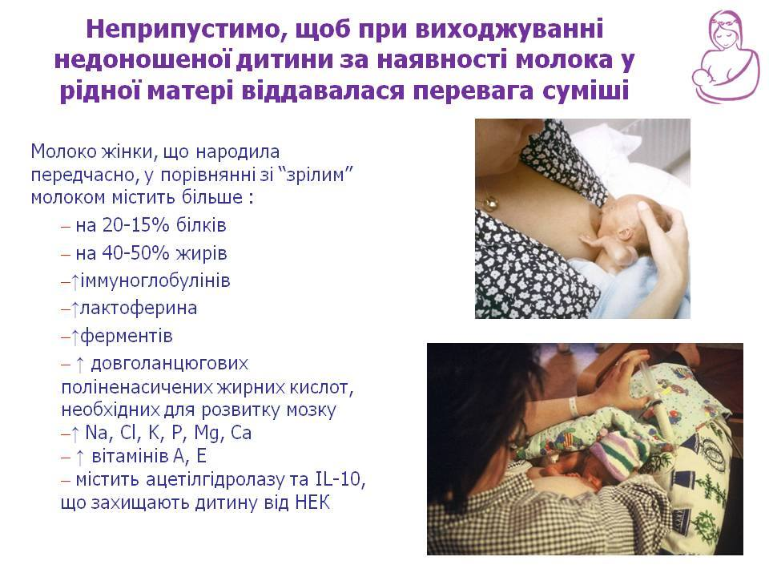
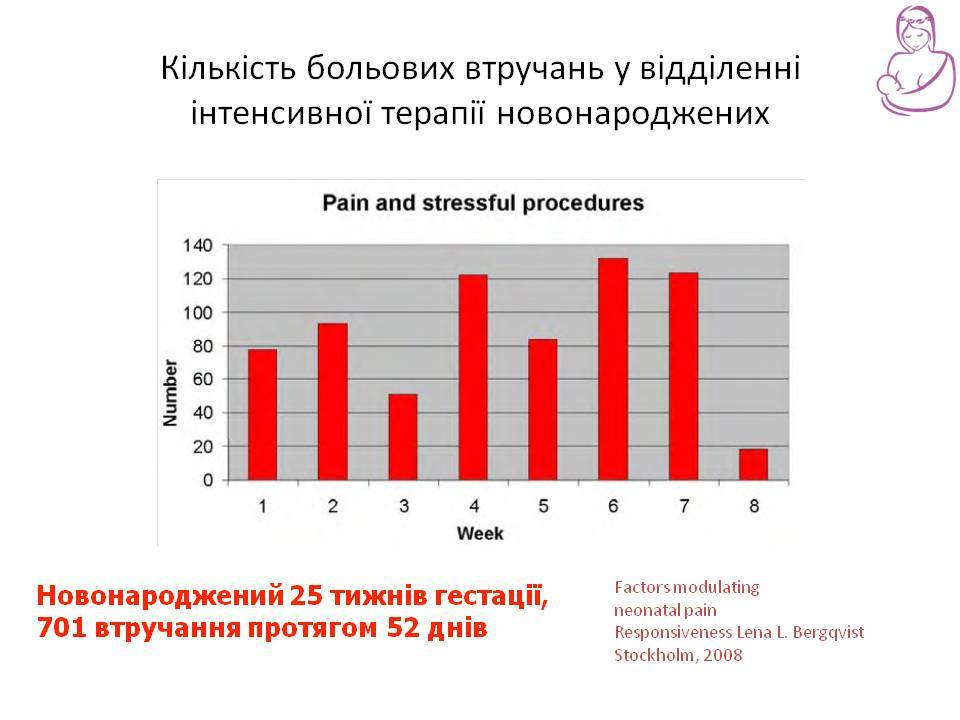

17 листопада - всесвітній день передчасно народжених дітей

Сьогодні, 17 листопада, Всесвітній день передчасно народжених дітей #WorldPrematureDay.
Передчасні пологи - це світова проблема. Кожна 10 дитина народжується передчасно, тому дуже багатьом батькам потрібна підтримка. У цей день велику увагу скеровують на підвищення обізнаності про проблему, яка може спіткати будь-яку сім’ю.
Кожного року все більше країн беруть участь у різних заходах, приурочених до дня передчасно народжених дітей. Так, 17 листопада в Україні підсвічують будівлі в фіолетовий колір, а в різних містах відбуваються зустрічі мам тих діток, які народилися раніше термінів.
Ми, Львівська група підтримки грудного вигодовування, запрошуємо вас у Всесвітній день передчасно народженої дитини дізнатися більше про ті заходи, які відбуваються у нашому місті.
Група підтримки ГВ для мам передчасно народжених діток тут.

Грудне вигодовування чи годування грудним молоком дуже важливе для передчасно народженої дитини.
За даними досліджень, навіть кожна грудь може виробляти молоко різної температури. Дослідження проводилося на прикладі пари недоношених близнюків з неоднаковою здатністю терморегуляції і різними потребами в додатковому теплі. За кожним з дітей закріплювалася своя грудь і в процесі годування вимірювали температуру" (Ludington-Hoe 2006)
Науково доведено, що штучне вигодовування хворої, передчасно народженої або дитини з малою вагою при народженні значно підвищує ризики розвитку станів, які загрожують її життю і здоров'ю.
У випадку годування сумішшю замість материнського молока:
- ймовірність розвитку сепсису зростає на 33%, менінгіту на 20% ( Hylander, Strobino, Dhannireddy 1998). Вірогідність розвитку септицемії тим вище, чим більше днів минуло від народження до першого годування материнським молоком (Ronnestad 2005);
- у 2,5 рази зростає ризик розвитку некротизуючого ентероколіту (Qigley, Henderson, Anthony, McGuire 2009);
- у 3,9 рази частіше розвивається важка гіпернатріємія і зневоднення (Davanzo 2007);
- на 63% збільшується ризик ретинопатії (Hylander et al. J Perinatol 2001;)
- годування глибоко недоношених дітей сумішшю, навіть спеціалізованою, замість грудного молока, значно збільшує необхідність дитини залишатися на парентеральному харчуванні (Cristofalo EA et al 2013).

Доведено, що навіть невеликий об’єм грудного молока має значення в успішному виходжуванні дитини.
У дослідженні Vohr BR et al. (Beneficial effects of breast milk in the neonatal intensive care unit on the developmental outcome of extremely low birth weight infants at 18 months of age. Pediatrics. 2006), в якому брало участь 773 немовлят з екстремально низькою масою тіла при народженні, було показано, що годування дітей грудним молоком було пов'язано з більш високим коефіцієнтом розумового розвитку, психомоторного розвитку, емоційної поведінки, а також з нижчим числом повторних госпіталізацій в інтервалі до 30 місяців. Причому всі ці показники збільшувалися на кожні 10 мл / кг / добу збільшення частки грудного молока: індекс розумового розвитку збільшився на 0,59 пунктів, індекс психомоторного розвитку - на 0,56 балів, загальна оцінка емоційного поведінки - на 0,99 пунктів, а також ризик повторної госпіталізації в інтервалі до 30 місяців скорочувався на 5%.
Тому при виходжуванні хворої або передчасно народженої дитини за наявності молока у рідної матері не повинна надаватися перевага суміші. Більше того, необхідно робити все для того, щоб кожна крапля материнського молока потрапила до дитини.

Шведські вчені провели дослідження, в якому зареєстрували кількість больових втручань та потенційно стресових процедур при виходжуванні передчасно народжених дітей. При цьому реєструвалися такі поширені втручання, як катетеризація пуповини, периферичних судин та сечового міхура, різні проколи шкіри для досліджень, інтубація, рентген та навіть зміна підгузків. Виявилося, що маленька недоношена 25 тижнева дитина була змушена переносити в середньому 701 втручання упродовж 8 тижнів перебування у відділенні інтенсивної терапії. І при цьому, її основне захворювання може викликати неабиякий біль.
Фахівці з виходжування передчасно народжених немовлят відносять грудне вигодовування до одного з найефективніших методів знеболення, тому що з грудним молоком дитина отримує ендорфіни та інші речовини, які мають знеболюючі властивості. До того ж, контакт з матір’ю під час годування грудьми має антистресовий ефект. Тому цьому питанню приділяють все більше уваги: контакт шкіра до шкіри, ссання не задля їжі, годування грудьми – невід’ємні складові догляду за методом «Мама-кенгуру», який в усьому світі визнаний «золотим» стандартом виходжування передчасно народжених та хворих дітей.

У статті Нільса Бергмана про режим годування передчасно народжених дітей пропонується розраховувати періодичність годування, виходячи з місткості шлунка і швидкості перетравлення молока. Новонароджений переїдає, а його організм піддається стресу, якщо інтервали між годуваннями більше години. "Шлунок ємністю 20 мл потребує годування з інтервалом приблизно 1 годину. Це відповідає часу випорожнення шлунка для грудного молока, а також нормальному циклу сну новонароджених. Більші об'єми їжі через великі проміжки часу, можуть викликати стрес, рефлюкс і гіпоглікемію. Для немовлят з низькою масою тіла при народженні особливо важливо уникати стресу від перегодовування, для нормального становлення фізіології шлунково-кишкового тракту".
На основі матеріалів
Київський міський моніторинговий центр підтримки грудного вигодовування
Nils J Bergman. Neonatal stomach volume and physiology suggest feeding at 1-h intervals